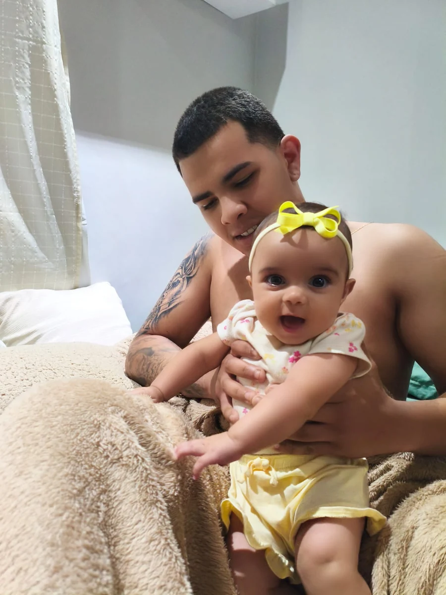

A melodia é instrumental. A letra aparece para você cantar com sua própria voz. Nada começa sozinho.
Feito com amor
do seu tio Brunno
para Mariah

Você prepara aqui. A Mariah explora o mundo aí.
☀olá, Mariah!
tocar · ouvir · descobrir
♪♡✿
⌣
Uma ponte para brincar fora da tela.
Nosso cuidado →Este espaço é operado pelo adulto. Para bebês, prefira a sua voz, objetos seguros e cartões impressos. Também há experiências ilustradas mediadas pelo adulto, sem vídeos, autoplay, pontuação ou sequência infinita.
01 / PRESENÇA É O COMEÇO
Hoje, vamos brincar de quê?
Escolha uma ideia e acompanhe o ritmo da Mariah. Pode durar só alguns instantes.
Meses são uma forma de organizar sugestões, não prazos de desenvolvimento. Comece pelas propostas simples; experimente as seguintes quando ela mostrar interesse e conforto. Você pode voltar a qualquer mês. Não é necessário sentar, engatinhar, falar ou andar para acompanhar a trilha.
UM MUNDO ILUSTRADO / EXPLORE AQUI
Uma descoberta em cada toque.
Bichinhos, música, surpresas, histórias e cores. O adulto conduz cada ação e conversa com a Mariah.
Para menores de 2 anos, brincar e conversar presencialmente continua sendo a prioridade. Estas ferramentas são para mediação do adulto; não representam uma recomendação de tempo de tela. Sem avanço automático ou cobrança de resposta.
Uma voz para a Mariah
Preferimos uma voz feminina em português, com ritmo natural. Ouça a amostra e escolha a que soar melhor no seu aparelho.
Preparando as vozes disponíveis neste aparelho.
A voz é sintética e a naturalidade varia entre aparelhos. Nas falas, o nome é pronunciado como Mariá; no site, continua escrito Mariah. Esta preferência vale para bichinhos, histórias, letras, números, formas e cores. As melodias continuam instrumentais.
Escolha uma imagem para começar. Os sons estão desligados.
CANTAR, OUVIR E RESPONDER
Uma música para cada descoberta.
Seis cantigas originais para cantar juntos. Escolha a melodia ou toque cada pedacinho no seu ritmo.
UM DIA, UMA PEQUENA DESCOBERTA
O calendário da Mariah.
Uma proposta por dia, com variações para cada fase. Um convite para estar junto, sem tarefa atrasada ou meta para cumprir.
Sem a data, escolha a fase manualmente. Com a data, as sugestões acompanham os meses completos de cada dia. A data fica apenas nesta página, sem ser salva ou enviada.
As propostas crescem em possibilidades, sem exigir que ela aprenda algo em uma data. Repetir uma brincadeira favorita também é bem-vindo. Se a idade estiver fora de 6–12 meses, escolha uma fase manualmente para consultar ideias com o cuidador.
02 / SUA VOZ DÁ VIDA À DESCOBERTA
Um pequeno laboratório de sons.
Selecione para preparar uma conversa ou imprimir um cartão. Depois, leve a descoberta para um objeto real.
Letras e números são repertório para o adulto nomear. Aos 6–12 meses, o foco é vínculo e exploração, sem metas de alfabetização ou contagem.
Um
Mostre um brinquedo grande e diga: “Um brinquedo! Vamos pegar?”
Falas com preferência por voz feminina e ritmo natural. Toque para ouvir.
03 / DESCOBERTAS QUE CABEM NO PAPEL
Um ateliê para levar com você.
20 desenhos originais com contornos grandes, mais alfabeto e números para imprimir.
Agora: olhar, apontar e ouvir histórias. O adulto pode colorir e nomear as figuras. Pintar não é uma habilidade esperada nessa idade. Mantenha papel, lápis, tintas e peças pequenas longe da boca e use materiais adequados à idade, sempre com supervisão.
Impressão A4 · preto e branco · sem anúncios
04 / MENOS PRESSA, MAIS PRESENÇA
O ritmo é dela.
O cuidado é nosso.
Não há tarefa para concluir nem tempo mínimo a cumprir. Bocejar, desviar o olhar, chorar ou ficar inquieta são convites para pausar.
Como usar sem transformar em tempo de tela?
Prepare a atividade, imprima se precisar e ative “Fora da tela”. Guarde ou bloqueie o aparelho. A recomendação da OMS para menores de 1 ano é evitar telas; aos 1 ano, tempo sedentário de tela também não é recomendado. Áudio opcional não substitui a conversa.
Quanto tempo brincar?
Comece com poucos instantes. Se houver interesse, uma brincadeira pode se estender, mas 10–15 minutos não são uma meta nem uma prescrição. Pare antes se ela mostrar cansaço; nunca mantenha o bebê numa atividade para cumprir um cronômetro.
Objetos, movimento e alimentação
Adulto presente e atento o tempo todo. Use objetos grandes, íntegros, laváveis e adequados à idade, sem pilhas acessíveis, cordões ou peças que se soltem. Brinque no chão seguro. De bruços, apenas acordada e supervisionada; para dormir, de barriga para cima. Alimentação exige prontidão e orientação individual do pediatra; tamanho grande por si só não elimina risco de engasgo.
Fontes para a família
OMS · brincar, movimento e telas
CDC · interações aos 6 meses
NHS · brincadeiras e materiais seguros
Ideias de convivência; sem promessa de ganho cognitivo e sem substituir orientação profissional.